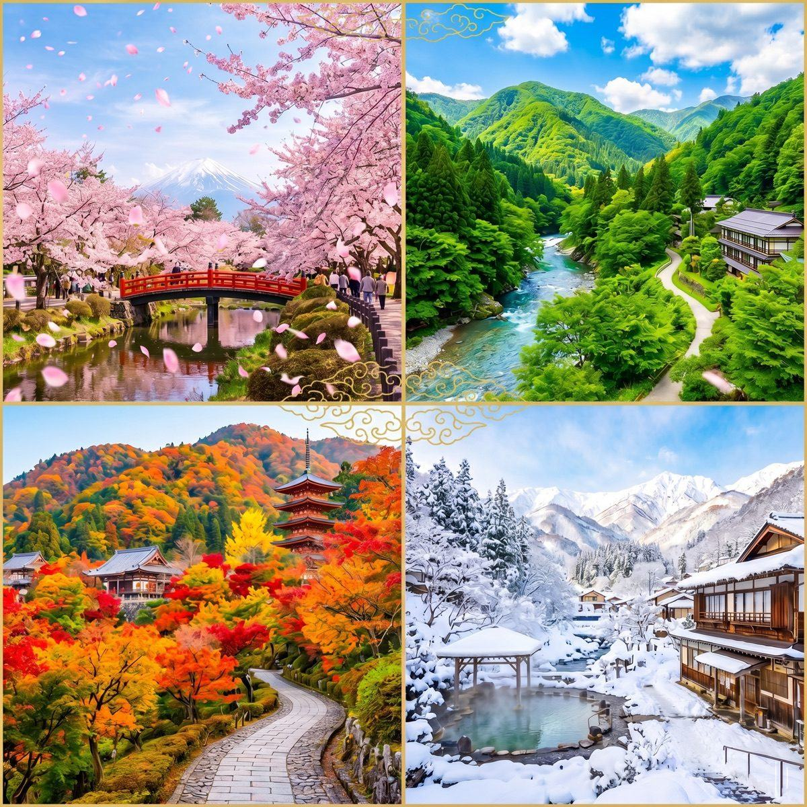

Hotel Inbound Marketing
ホテル・旅館の魅力を、中国人旅行者の宿泊候補に入れる。
小紅書で旅行前の保存を獲得し、KOL/KOC投稿と中国語LPで信頼を作り、予約導線までつなげる。PROTECHは宿泊施設の中国インバウンド集客を一気通貫で支援します。
Challenges
宿泊施設は、旅行計画の早い段階で見つかる必要があります。
訪日中国人は宿泊予約の前に、小紅書でエリア、客室、朝食、温泉、周辺スポットを比較します。中国語で魅力と実用情報が出てこない施設は、予約候補に入る前に離脱されます。
写真はあるのに、広さ、眺望、アメニティ、家族利用、荷物置き場など中国人が知りたい情報が不足しがちです。
客室タイプ別の使い方、朝食、温泉、館内導線、子連れ・カップル利用シーンを投稿化します。
駅からの行き方、空港アクセス、周辺グルメ、観光地との組み合わせが見えないと保存されにくくなります。
エリア名、最寄り駅、周辺観光、送迎、モデルコースを小紅書内で検索される形にします。
中国語対応、Alipay、荷物預かり、チェックイン、温泉マナーなどの不安を事前に解消する必要があります。
中国語LP、FAQ、支払い・チェックイン・荷物預かり情報を予約導線に接続します。

Hotel Booking Blueprint
宿泊前の不安を、投稿とLPで先回りして解消します。
Growth Design
宿泊予約までの導線を、媒体ごとに設計します。
客室、朝食、温泉、周辺観光を「泊まる理由」として投稿化し、エリア検索で見つかる状態を作ります。
旅行計画段階の保存を狙い、ホテル名だけでなく地域名・体験名で露出を作ります。
KOL / KOC部屋紹介、朝食、館内導線、周辺散策を体験レビュー化し、広告感の少ない口コミを蓄積します。
第三者視点で、写真では伝わりにくい滞在感と移動のしやすさを補完します。
LP / Booking中国語LPや予約導線を整え、支払い・アクセス・チェックイン情報を明確にします。
公式サイト、OTA、WeChat問い合わせのどこへ流すかを施設ごとに切り分けます。


Related Route
宿泊施設向けの関連導線
ホテル・旅館ページから、記事、事例、KOC施策、相談へ進める入口を用意しました。
FAQ
ホテル・旅館の中国インバウンド集客 FAQ
ホテルや旅館は小紅書で何を発信すべきですか？
⌄客室、朝食、温泉、周辺観光、アクセス、荷物預かり、決済対応など、宿泊前に不安になりやすい情報を中国語で整理します。
OTAに掲載していても小紅書運用は必要ですか？
⌄OTAは予約直前の比較に強い一方、小紅書は旅行計画段階の発見・保存に強く、宿泊候補に入る前段階を作れます。
地方旅館でも中国インバウンド集客はできますか？
⌄可能です。温泉、会席料理、浴衣、雪景色、送迎などの日本らしい体験は小紅書で保存されやすいテーマです。